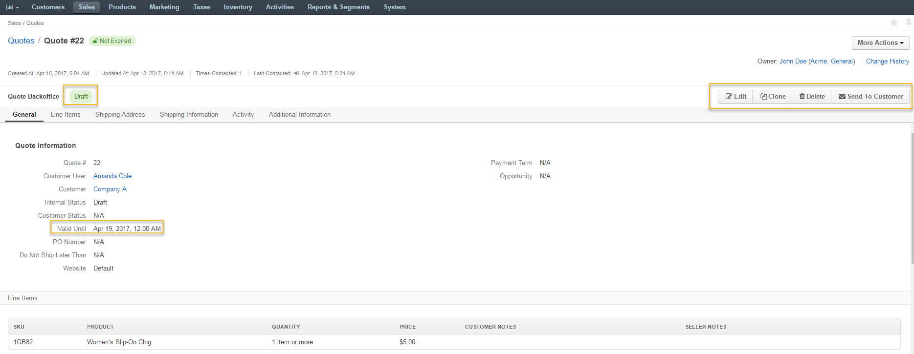
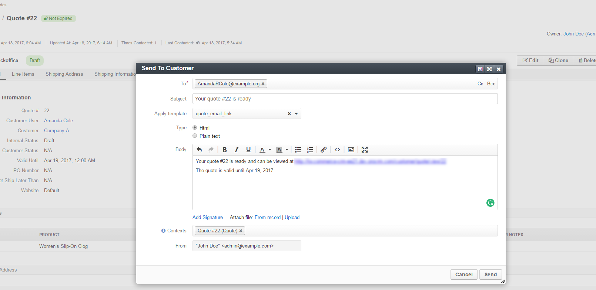
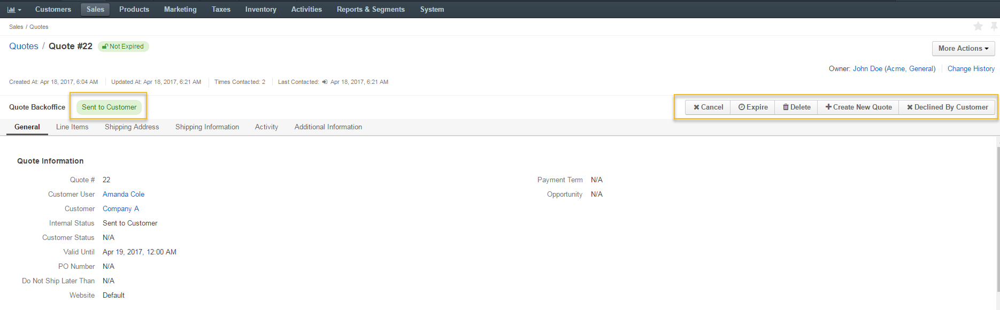
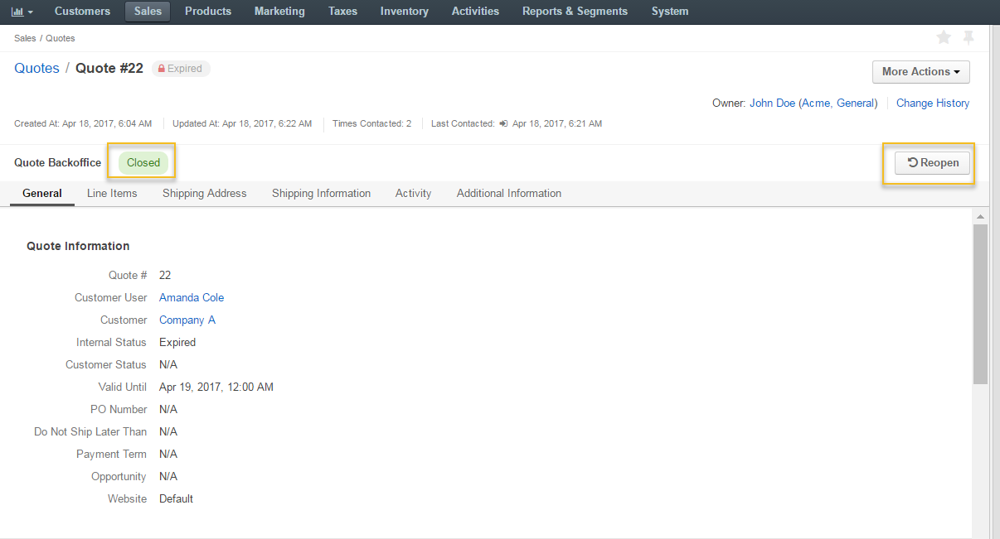
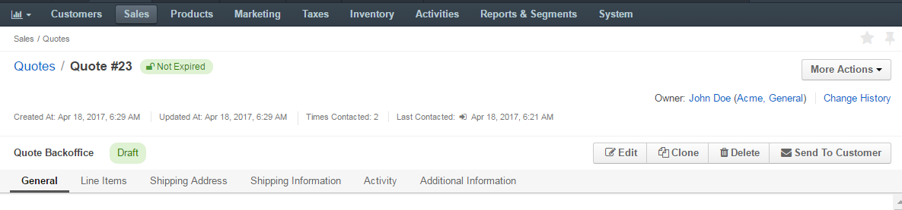

Note
This flow is used when the Quote Management Flow is active.
As an illustration, let us see the quote in action and walk through the steps a buyer and a sales manager may follow to communicate or negotiate for the sale:
Once a quote is created, it is automatically moved to the Draft step with the possibility to edit, clone, delete and send the quote to a customer.
The quote with an offer valid until 19 April is sent to a customer.
The quote transitions from Draft state into Sent to Customer. Now it is possible to cancel, expire, delete, create a quote, or mark it as declined by customer.
Note
If a customer generates an order based on the quote, you can leave the quote in the Sent to Customer state so that customer user could reuse it for future orders, or expire it to disable orders based on this quote.


Note
See more information about the simple quote management via the Quote Management Flow. You will learn additional details on the steps and actions available at every step.